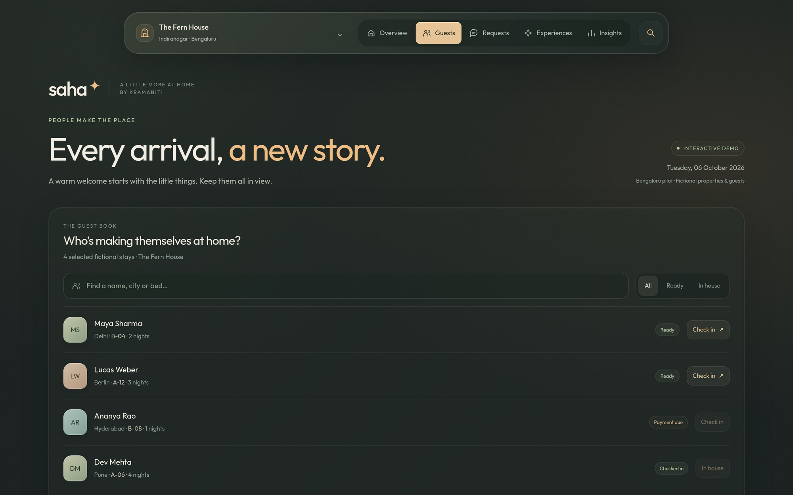
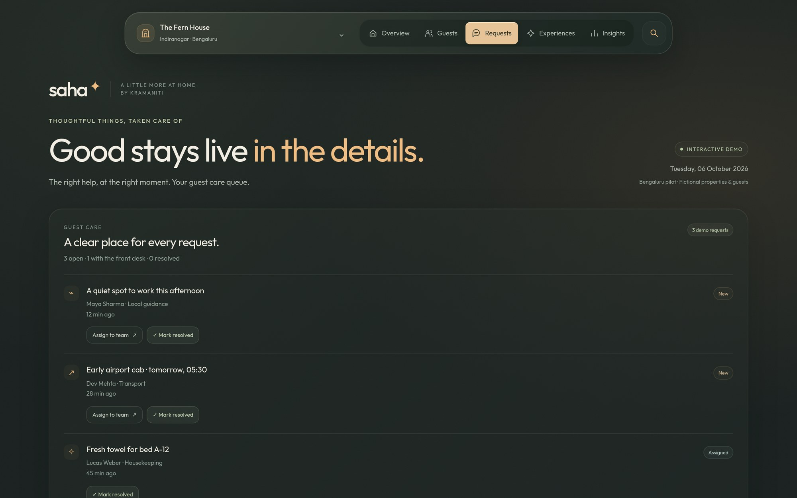
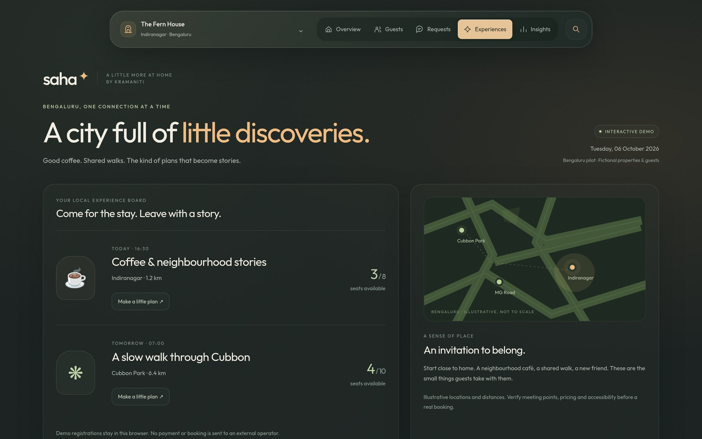
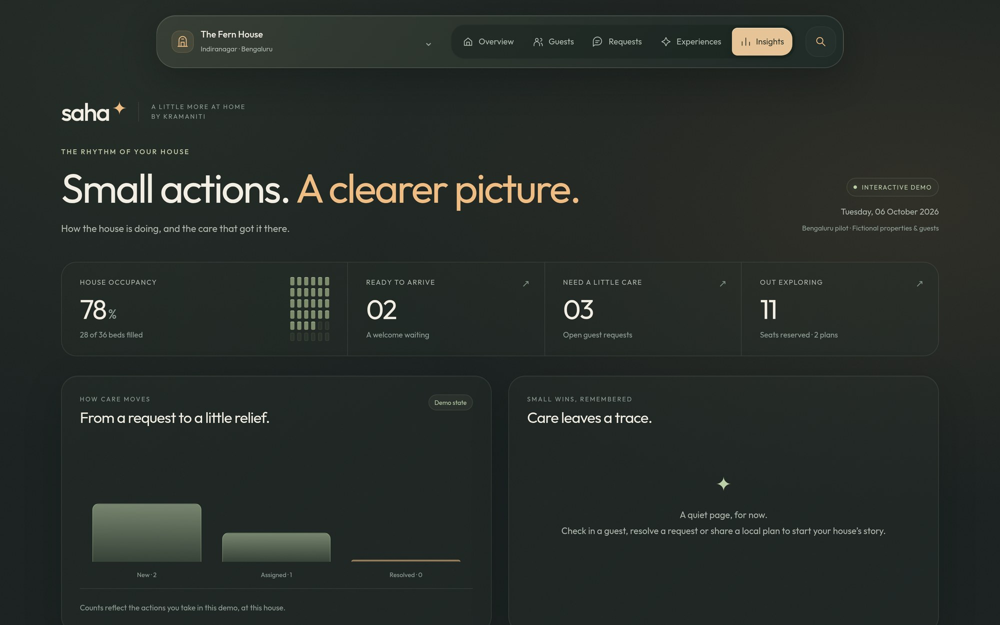
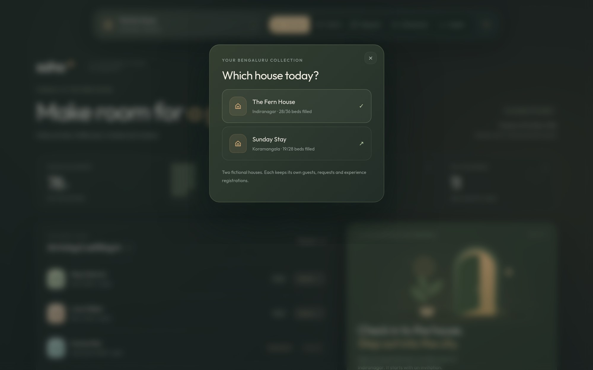
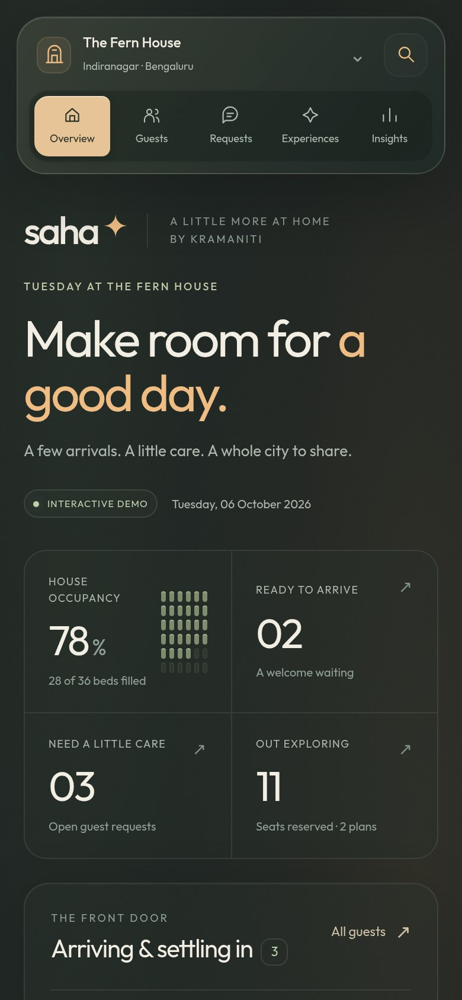

04 / Full case study
Saha
a calmer front desk.
A guest-experience dashboard for small boutique stays: who is arriving, what guests need, and what they can do in the city.

The problem
How does a small stay keep every guest feeling looked after without a hotel-sized system?
Saha is written for a host running one or two boutique houses. The Overview answers the morning questions first: how full the house is, who is ready to arrive, which requests need care, and how many guests are out exploring.
Each part of the day then has its own space: guests, requests, experiences, and a simple insights view. Language stays warm and plain, so it reads like a house, not a ticket queue.
The sequence
From arrival
to a good day.

A searchable guest list for the house, filterable by Ready and In house, with a check-in action per guest.

Each guest request shows who asked and when, with Assign to team and Mark resolved actions.

Small city plans such as a neighbourhood coffee walk, with seats taken and a map of where they happen.

House numbers alongside a chart of requests moving from open to resolved, and a log that fills as the host acts.

A switcher moves between The Fern House (Indiranagar) and Sunday Stay (Koramangala).

The same Overview stacks into a single column for hosts on the move.
A necessary boundary
A demo you can safely
play with.
Every guest, request, and house in Saha is fictional demo data. Changes stay in the browser, and a Reset demo button returns everything to its starting state. Saha is a concept I designed end to end, not a product running at a real stay, so there are no results or host feedback to report yet.